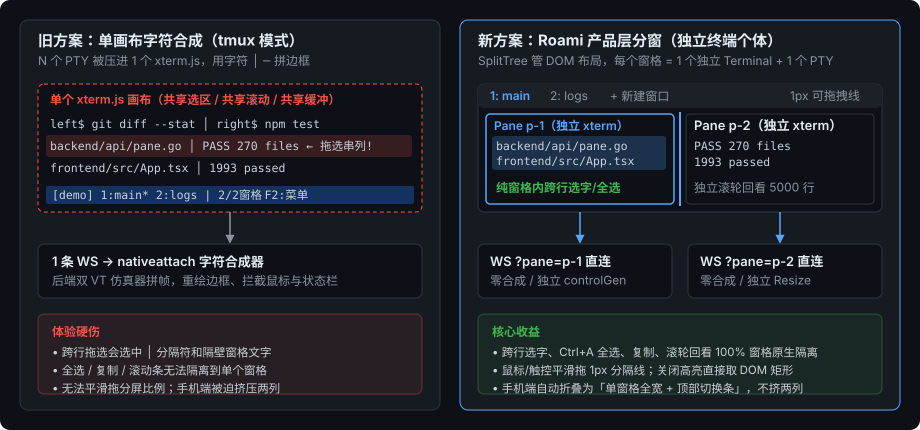

产品层独立窗格分屏（Workspace Pane Split）
Terminal 不在单个终端画布内部做字符分屏；分屏与窗口编排提升到 Roami 产品界面层，让每一个窗格都是完全独立的 Terminal 个体。
一句话核心原则：
在 Roami Web 端，1 个窗格（Pane）= 1 个独立 PTY = 1 个独立 xterm.js 实例 = 1 个独立 DOM 容器。
分屏树与窗口切换是 Roami 产品工作区的布局能力，而不是终端字符缓冲区里的
│ / ─ 字符画。
为什么必须跳出「单画布分屏」
此前为了让 Web 端和 CLI 快速共享分屏，backend/pty/compat_native.go 把 Web 终端接进了 CLI 的 nativeattach 字符合成器（类似 tmux 在单个终端里画 ASCII 边框）。这种方式在浏览器里带来一连串结构性硬伤：
| 高频操作 | 单画布字符分屏（现状 / tmux 模式） | Roami 产品层独立窗格（新方案） |
|---|---|---|
| 跨行拖选与复制 | 左右分屏时，鼠标向下拖选会横穿 │ 分隔符并把隔壁窗格文字一并选中，复制出的命令/堆栈被截断污染。 |
每个窗格是独立 DOM + 独立 xterm 实例，拖选被浏览器/xterm 天然限制在当前窗格内，折行长命令、URL、报错堆栈原样复制。 |
| 全选 / 窗格内搜索 | Ctrl+A / selectAll() 会把同屏所有窗格混成一锅选中，无法只复制一个窗格的完整日志。 |
全选、复制、清空选区均严格作用于当前聚焦窗格。 |
| 独立历史回看 | 全屏合成器只渲染当前可视帧，无法一边翻左侧 5000 行构建日志、一边在右侧敲命令。 | 每个窗格保有独立 5000 行 xterm scrollback 与滚轮滚动，互不干扰。 |
| 拖拽调整比例 | 字符网格里无法平滑拖拽，调整比例必须靠快捷键或后端重算字符列。 | DOM 1px --border-subtle 分隔线，鼠标/触控直接拖拽，实时 Flex 预览，松手提交版本号 ResizeSplit。 |
| 焦点切换与关闭定位 | 靠像素反推字符坐标再发 select-pane；关闭红框还需估算行列数、扣状态栏行与分隔列。 |
点击即聚焦真实 DOM 窗格；关闭确认聚光灯直接取该窗格 getBoundingClientRect()，零误差。 |
| 全屏 TUI 与底栏 | 终端底行常驻一条蓝色/青色 ANSI 状态栏（[demo] 1:main* ... F2:菜单），既占掉一行高度、视觉喧宾夺主，又和 Claude Code / Codex / vim 的滚动区打架。 |
Web 端彻底移除底行蓝色状态栏，终端 100% 高度还给内容；CLI 端也默认隐藏（仅在用户按 F2 呼出菜单时显示当前窗口/窗格状态，或通过显式开关按需开启）。 |
| 手机端自适应 | 390px 宽度下左右两列各剩 ~20 列，字全部折断没法看。 | 紧凑视口（data-size="compact"）自动收起为「单窗格全宽 + 顶部窗格切换条」，手指点按即可切换。 |
架构对比一览

roami-sessiond 仍管同一棵 Session → Window[] → LayoutNode → Pane 布局树，但 Web 端由 SplitTree 按 DOM 树挂载多个独立 Terminal，每个窗格直连自身 PTY 流。现有底座已具备 80% 能力
这次重构不是推倒重来，而是把之前已经造好但尚未在主视图启用的产品级底座真正接通：
- 后端布局树与宿主（已就绪）：
internal/sessionbackend的Window / LayoutNode / SplitPane / ResizeSplit / FocusPane / ClosePane与roami-sessiond已原生按paneId隔离每个 PTY 和control_gen。 - 单窗格直连通道（已就绪）：
backend/pty/native.go（/api/term/native/:name?pane=:paneId）已支持按paneId直接绑定单一 PTY，不经过nativeattach字符合成器。 - 前端递归分屏容器（已就绪）：
frontend/src/components/terminal/SplitTree.tsx+SplitTree.css已实现桌面端递归 Flex 树、1px 可拖拽分隔线、键盘调整比例与手机端单窗格切换条。 - 结构化窗口菜单接口（已就绪）：
GET /api/sessions/:name/windows与POST /api/sessions/:name/terminal-action已落地，只需补齐完整layout树返回与多端布局变更广播。
分阶段落地路线
- Phase 1 — 原生会话 Web 端切换至独立窗格树（P0）：新增
GET /sessions/:name/layout+ 轻量布局订阅；Terminal.tsx支持paneId单窗格直连（去掉 Web 端 ANSI 合成与底行假状态栏）；新增NativeSplitWorkspace.tsx用SplitTree承载所有窗格；关闭确认红框改用真实 DOM 矩形。 - Phase 2 — 窗格级原生操作增强（P1）：右键菜单增加「全选当前窗格」「清空当前窗格」；多窗口时在工具栏下方显示极简窗口条（单窗口自动隐藏）；多端（CLI / 电脑 / 手机）布局变更实时同步；WebGL 上下文上限保护（超过阈值优雅降级 Canvas 渲染）。
- Phase 3 — 细节打磨与老通道收口（P2）：CLI
roami session attach继续保留compositor.go作为纯 TTY 兜底；旧 tmux 会话保持现有单画布兼容路径不动；清理不再被 Web 端依赖的ComputeCellLayout像素反推逻辑。